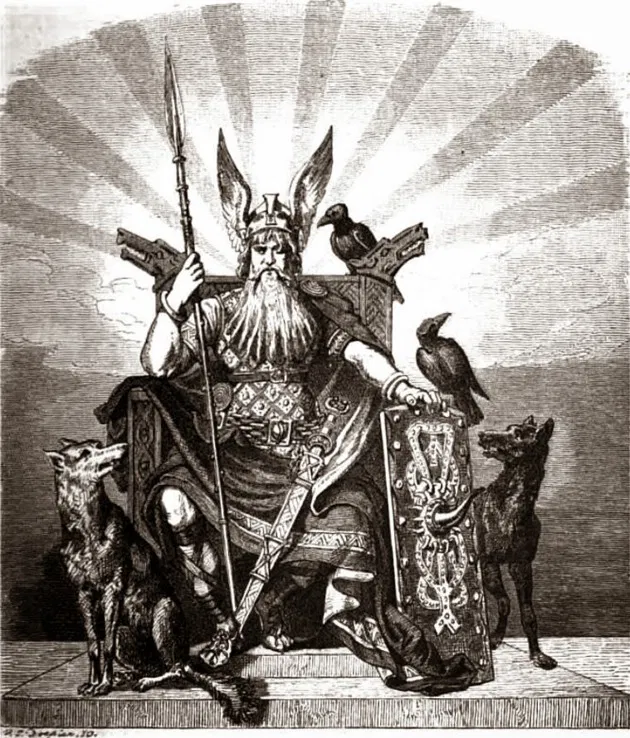

Deus Nordico Odin, mais conhecido pelo titulo de "O pai de todos" e o deus nordico mais poderoso, ele e o deus da sabedoria, da guerra e da morte. Odin e o deus mais venerado pelos guerreiros, pois ele e o deus da guerra e da morte, e e ele quem escolhe quem vai para o Valhalla.
Alguns de suas Habilidades